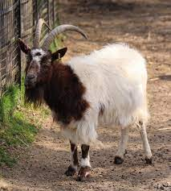
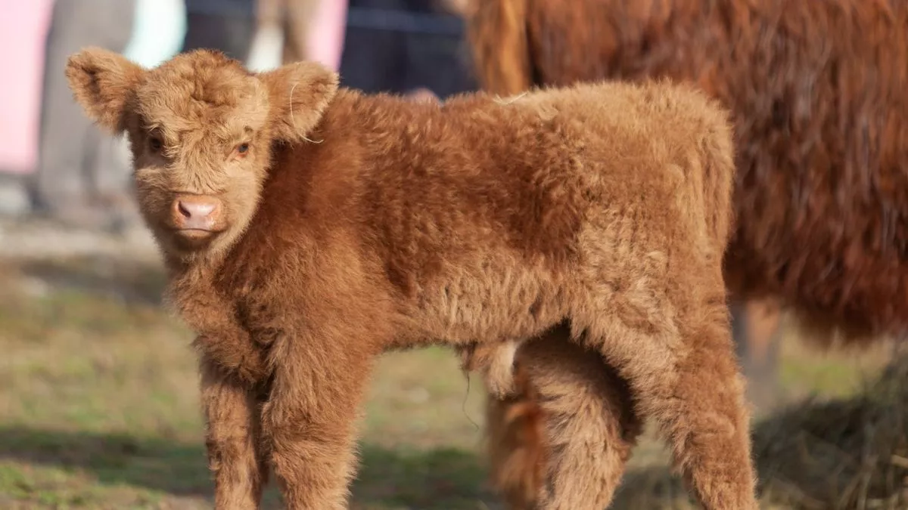
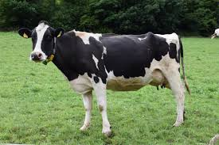
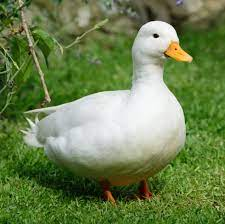
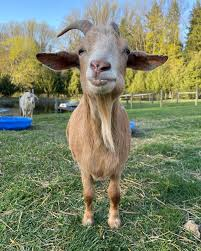
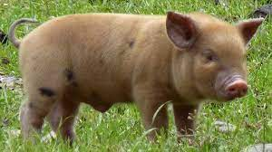

Billy Jean is a male goat. He came into the shelter a couple weeks ago and is very vocal and energetic.

Daisy female is light brown calf. She is very friendly and loves being around other farm animals or house pets.

Waffles is a female black and white cow. She is quite shy and would also prefer to be around other cows.

Momo is white male duck. Momo isn't the friendliest and likes his own space, however he is an amazing swimmer.

Gregory is a male light brown goat. He's extremely silly and does not understand the concept of personal space.

Spider Pig is a light brown male pig. He will eat anything and everything left unattended (Be careful).